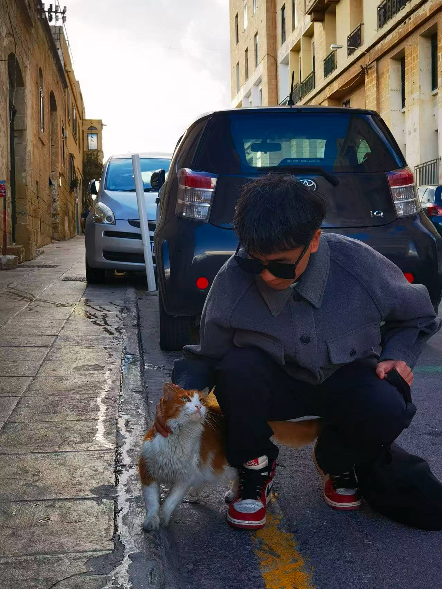

我是一名职业本科无人机专任教师，专注于无人机编程与智能巡检技术的教学与研究工作。
我的主要研究方向为无人机智能系统，将计算机视觉与边缘计算技术应用于无人机平台，致力于森林草原火点智能检测。
目前我正在开发 Wildfire Drone Detection 项目——基于 YOLOv8 的森林草原火点巡检系统，支持 Jetson Nano 边缘部署，硬件平台为 Holybro X500 (PX4)。
